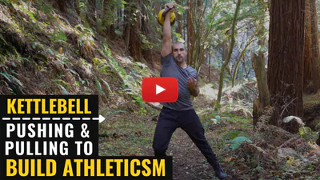

B643 · Build Athleticism With These 2 Kettlebell Exercises!
Hi {first_name},
Being strong and being athletic overlap, but they’re different. Today’s video introduces two kettlebell progressions that train both.
A classic strength combination is the push - pull because of how well those two movements complement and balance each other. Today, we’ll use an overhead press for the “push” movement and a row for the “pull”.
Incorporating lower body movement during the press (in the case below, the Kettlebell Countered Sea-Saw Press) is one way to further integrate the movement and enhance the athleticism required. You'll need smooth, clean movement of your legs and hips while pressing.
For the row (Coiled Lunge Stance Row), you’ll be holding strong in an isometric lunge position with your lower body while adding in a slight side bend and rotation of the spine during the pull. If you feel confident with both the classic lunge stance row, as well as the standing overhead press, give these two a go!
Watch today’s video by clicking here and train your body to perform.
 Keep training intentionally, Mike Salemi
P.S. I’ve got an exciting announcement coming up! I’ve been working on some new developments to one of my programs that I believe will be what many of you have been looking for. Keep your eyes open for it ; ) |